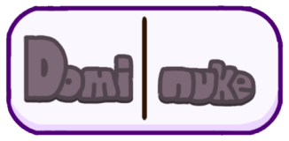

Welcome to the Dominuke website

What IS Dominuke?
Dominuke is a game about dominoes board game mixed and inspired by the Mario Party series
It has minigames (or megagames), playable characters (dominukers), cool music (there's an alt soundtrack) and a juicy artstyle (not really- wait did i just say juicy)
Our (or my) social media:
YouTube
Twitter
Game pages:
Gamejolt
Itch.io